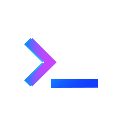

<!-- Content of the workspace-component -->
<div class="workspace-content">
    <mat-card>
        <!-- Header of the component -->
        <div class="input-search-container flex-input-mobile" style="display: none;">
            <input name="searchText" type="text" placeholder="Devspace durchsuchen" [(ngModel)]="searchInput">
            
            <app-search-dialog [searchValue]="searchInput"></app-search-dialog>
        </div>
        <section class="header-workspace section hide-input-mobile">
            

            <div class="group-logo hide-input-mobile">
                <div>
                    
                </div>
                <div>
                    <span>DevSpace</span>
                </div>
            </div>
            <div class="hide-input-mobile">
                <a (click)="openChatWindow()" class="new-chat-button"><mat-icon class="new-chat-icon"
                        svgIcon="new-channel" aria-hidden="false"></mat-icon></a>
            </div>
        </section>
        <!-- content with channels-container and chats-container         -->
        <mat-card-content>
            <!-- container where you can select and add channels you want to chat in     -->
            <section class="section" id="channels">
                <div class="panel-content">
                    <mat-expansion-panel hideToggle>
                        <mat-expansion-panel-header (click)="rotateArrow(0)">
                            <a class="panel-container">
                                <mat-icon class="icon" svgIcon="arrow" aria-hidden="false" aria-label="Arrow icon"
                                    [ngClass]="arrowRotated[0] ? 'arrow' : 'rotated'">
                                </mat-icon>
                                <mat-icon class="icon" svgIcon="workspace" aria-hidden="false"
                                    aria-label="Workspace icon"></mat-icon>
                                <span>Channels</span>
                            </a>
                        </mat-expansion-panel-header>
                        <div class="panel-container-open">
                            <div *ngFor="let channel of channelsService.currentUserChannels; let i = index"
                                (click)="openChannel(channel, i)"
                                [ngClass]="channelsService.clickedChannels[i] ? 'clicked' : ''">
                                <mat-icon [ngClass]="channelsService.clickedChannels[i] ? 'hashtag-black' : ''"
                                    class="icon" svgIcon="hashtag" aria-hidden="false" aria-label="Hashtag icon">
                                </mat-icon>
                                <span>{{ channel.name }}</span>
                            </div>
                        </div>
                        <a (click)="openDialog()" class="add-channel-container">
                            <mat-icon class="icon" svgIcon="add-circle" aria-hidden="false"
                                aria-label="Add circle icon"></mat-icon>
                            <span>Channel hinzufügen</span>
                        </a>
                    </mat-expansion-panel>
                </div>
                <div><a (click)="openDialog()" class="add-button"><mat-icon>add</mat-icon></a></div>
            </section>
            <!-- container where you can select people you want to text directly to    -->
            <section class="section" id="messages">
                <div class="panel-content">
                    <mat-expansion-panel hideToggle>
                        <mat-expansion-panel-header (click)="rotateArrow(1)">
                            <a class="panel-container">
                                <mat-icon class="icon" svgIcon="arrow" aria-hidden="false" aria-label="Arrow icon"
                                    [ngClass]="arrowRotated[1] ? 'arrow' : 'rotated'">
                                </mat-icon>
                                <mat-icon class="icon" svgIcon="chat" aria-hidden="false"
                                    aria-label="Workspace icon"></mat-icon>
                                <span>Direktnachrichten</span>
                            </a>
                        </mat-expansion-panel-header>
                        <div class="chat-container-open">
                            <div *ngFor="let user of users; let i = index" (click)="clickUserContainer(user, i)"
                                [ngClass]="channelsService.clickedUsers[i] ? 'clicked' : ''">
                                <div>
                                    
                                    <div [ngStyle]="{ 'background': user.loginState === 'loggedIn' ? '#92C83E' : '#686868' }"
                                        class="status">
                                    </div>

                                    <!-- Badge anzeigen, wenn der Benutzer der Sender ist und ungelesene Nachrichten für ihn existieren -->
                                    <div *ngIf="user.unreadMessagesCount > 0" class="badge"
                                        matBadge="{{ user.unreadMessagesCount }}"></div>
                                </div>
                                    <span *ngIf="user.id === this.currentUserUid">{{ user.name + ' (Du)' }}</span>
                                    <span *ngIf="user.id != this.currentUserUid">{{ user.name }}</span>
                            </div>
                        </div>


                    </mat-expansion-panel>
                </div>
            </section>

        </mat-card-content>
    </mat-card>
</div>
    <a (click)="toggleNewChatForMobile()" class="new-chat-button new-chat-button-mobile"><mat-icon class="new-chat-icon" style="filter: invert(1);"
            svgIcon="new-channel" aria-hidden="false"></mat-icon></a>
